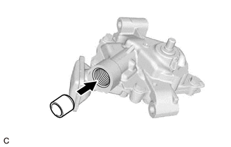
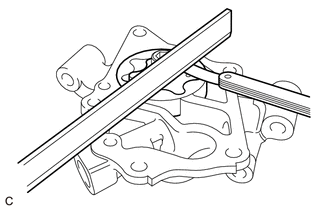
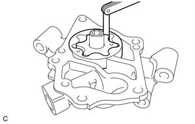
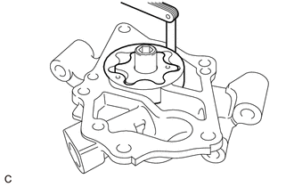

PROCEDURE
INSPECT OIL PUMP RELIEF VALVE

Coat the oil pump relief valve with engine oil, then check that it falls smoothly into the valve hole by its own weight.
Tech Tips
If the oil pump relief valve does not fall smoothly, replace the oil pump assembly.
INSPECT OIL PUMP ROTOR
Check the side clearance.

Using a feeler gauge and precision straightedge, measure the clearance between the oil pump drive rotor, oil pump driven rotor and precision straightedge.
| Standard Side Clearance |
|---|
| 0.030 to 0.070 mm (0.00118 to 0.00276 in.) |
| Maximum Side Clearance |
|---|
| 0.16 mm (0.00630 in.) |
Tech Tips
If the side clearance is greater than the maximum, replace the oil pump assembly.
Check the tip clearance.

Using a feeler gauge, measure the clearance between the oil pump drive rotor and oil pump driven rotor tips.
| Standard Tip Clearance |
|---|
| 0.04 to 0.16 mm (0.00157 to 0.00630 in.) |
| Maximum Tip Clearance |
|---|
| 0.35 mm (0.0138 in.) |
Tech Tips
If the tip clearance is greater than the maximum, replace the oil pump assembly.
Check the body clearance.

Using a feeler gauge, measure the clearance between the oil pump driven rotor and oil pump body.
| Standard Body Clearance |
|---|
| 0.11 to 0.19 mm (0.00433 to 0.00748 in.) |
| Maximum Body Clearance |
|---|
| 0.325 mm (0.0128 in.) |
Tech Tips
If the body clearance is greater than the maximum, replace the oil pump assembly.